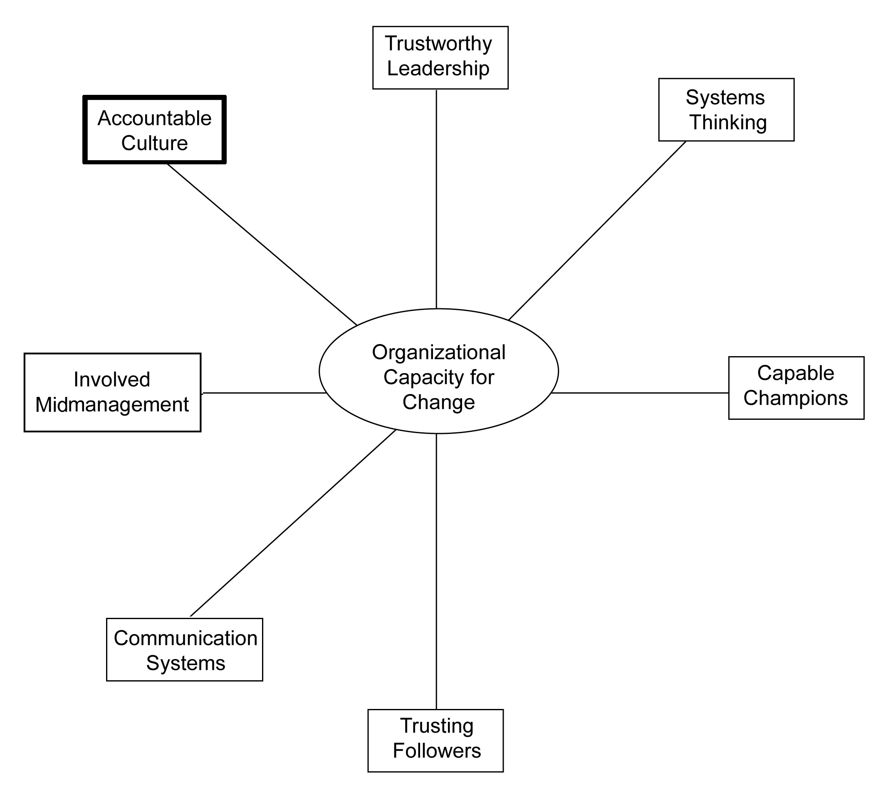

It is not only what we do, but also what we do not do, for which we are accountable.
Moliere
Only entropy comes easy.
Anton Chekhov
AccountabilityAn obligation or willingness to understand and accept responsibility for one’s actions. refers to an obligation or willingness to accept responsibility for one’s actions. When a person accepts responsibility, that person is committed to generating positive results, what some people call “taking ownership.” Sometimes responsibility is obligated by assuming a specific role within an organization. For example, the chief financial officer of a corporation is obligated for knowing about and protecting the financial well-being of the firm. However, lots of work gets done within organizations for which the person is not obligated. For example, that same chief financial officer might demonstrate concern for the natural environment even though he or she is not formally responsible for it.
When individuals are accountable, they understand and accept the consequences of their actions for the areas in which they assume responsibility. When roles are clear and people are held accountable, work gets done efficiently and effectively. Furthermore, constructive change and learning is possible when accountability is the norm. When roles are not clear and people are not held accountable, work does not get done properly, and learning is not possible.
In highly litigious societies, such as the United States, accountability is often hard to assign or constructive to assume since there is a lot of societal downside to being responsible and not much upside. This is particularly true for organizational actions whereby an individual does not have full control over the outcomes. For example, individuals are often eager to serve on a board of directors as it is a prestigious position that can lead to new learning and an expanded network with other elites. However, board members are often quick to disavow responsibility for many organizational dysfunctions when class action lawsuits get filed. Avoidance of accountability is not only bad for society; but it is also devastating for organizations. And since accountability can be the container in which organizations change occurs, it is essential to organizational capacity for change.
Clearly, supervisors are the ones who possess the authority to hold employees accountable for results; and the board of directors is the group responsible for holding the senior-most executive accountable. However, managers and directors vary in their interest and ability to do this. Consequently, cultivating an organizational culture that supports and encourages accountability within an organization is fundamental to organizational change.
While there are many definitions of organizational culture, I think that one of the clearest was offered by Edgar Schein. He defined organizational culture as
a pattern of basic assumptions—invented, discovered, or developed by a given group as it learns to cope with its problems of external adaptation and internal integration—that has worked well enough to be considered valid and, therefore, to be taught to new members as the correct way to perceive, think, and feel in relation to those problems.Schein (1985), p. 9.
Schein argued that there are three levels of culture in any organization. The most visible level of culture is where observable organizational artifactsObservable actions or items, such as technology and architecture, that provide information about an organization. such as technology, art, dress, pictures, architecture, and audible behavior occur. A cultural artifactA visible expression of the underlying values and assumptions that permeate an organization. is a term used to refer to any observable item or action created by humans that gives information about the collectivity of the creators, the users, or both. The intermediate level of organizational culture is the values and beliefs about what the purpose of the organization is, and what gives meaning to its existence. Usually, there is a social consensus as to what values and beliefs matter most within an organization. And finally, at the deepest unconscious level within an organization, there are assumptions about human nature, human relations, time, and the organizational and environmental interface. Schein argued that these assumptions serve as the foundation for the values, norms, and beliefs within all organizations, and are hardest to change.Schein (1985), p. 14.
Some observers argue that organizational culture can be a “social control” mechanism that is more efficient and effective than more formal and traditional control mechanisms due to its fluid pervasiveness.Ouchi (1980). However, a more common view is that organizational culture is the “social glue” that makes organizational life meaningful.Alvesson (2002), p. 32.
In recent years, organizational culture has emerged as a key source of competitive advantage for many firms. Since resources can be easily obtained by new entrants, technology can be easily copied by competitors, and employees are now highly mobile, traditional ways of generating competitive advantage through industry positioning are less relevant today. Furthermore, it has been increasingly observed that a strong set of core values and beliefs often leads to competitive advantages and superior performance for many firms. Since performance above industry norms is a common indicator of competitive advantage, organizational culture is getting more attention by strategists. Finally, since culture is relatively hard to imitate, the competitive advantage is often sustainable.Barney (1986).
In many organizations, there is not a cultural focus on being accountable and getting results. Indeed, five “crippling habits” deeply embedded in an organizational culture are (a) absence of clear directives, (b) lack of accountability, (c) rationalizing inferior performance, (d) planning in lieu of action, and (e) aversion to risk and change.Prosen (2006).
There are many explanations for these negative habits. One is that senior executives consciously or unconsciously neglect their responsibility for executing the strategy well. Forming a brand new strategy is exciting, garners attention from external stakeholders, and happens rather quickly. In contrast, executing an existing strategy requires attention to detail, is often not noticed outside of an organization, and takes a long time to manifest an effect. Hence, making an organization accountable is often not “sexy” to senior leaders.Bossidy and Charan (2002).
Another reason why organizational cultures do not hold members accountable is what is known as the “smart talk trap.” This phenomenon refers to organizational cultures that emphasize talk over action, looking good over getting results, and sounding intelligent rather than delivering results. Managers sometimes let talk substitute for action because that is what they have been trained to do. In addition, there is a human propensity to assume intelligence for those who talk with complex words and focus on hard-to-understand concepts. Unfortunately, complex words and concepts are often difficult to execute. And finally, studies have shown that individuals who criticize ideas are often judged to be smarter than individuals who attempt to be helpful and constructive. While critical thinking is clearly needed in organizations, it often does not lead to constructive action.Pfeffer and Sutton (1999).
Whatever the reason for lack of accountability within an organization, organizational cultures are central to making the organization change capable. Indeed, there is a “hard side” to change management and it centers on keeping people accountable and getting organizationally important results. Prescribing desired results, clarifying responsibility, measuring performance, rewarding those who meet or exceed expectations, and challenging those who do not are all integral to an organization’s norms, values, and assumptions about the way things get done. Accountability is a cultural mind-set, and accountable behaviors emerge from organizational cultures that value it.
Two books have become popular tomes on the relationship between cultural accountability and organizational capacity for change. The first book, written by Larry Bossidy and Ram Charan, talks about the importance of creating a culture focused on executing strategy well. Bossidy and Charan note that execution must be a core element of an organization’s culture and that execution is a discipline that is essential to strategic success.
Larry Bossidy quickly rose through the management ranks at General Electric, and then inherited a turnaround situation when he became CEO at Honeywell International. He states,
My job at Honeywell International these days is to restore the discipline of execution to a company that had lost it. Many people regard execution as detail work that’s beneath the dignity of a business leader. That is wrong. To the contrary, it’s a leader’s most important job.Bossidy and Charan (2002), p. 1.
Bossidy goes on to say, “Organizations don’t execute unless the right people, individually and collectively, focus on the right details at the right time.”Bossidy and Charan (2002), p. 33. Since Bossidy led Honeywell through a very successful and dramatic turnaround, his words carry special weight.
The second major book devoted to creating accountability was written by three change consultants—David Ulrich, Jack Zenger, and Norm Smallwood. They argue that many leaders and leadership training courses neglect the fact that leadership is about getting desired results. In their own words,
Results-based leaders define their roles in terms of practical action. They articulate what they want to accomplish and thus make their agendas clear and meaningful to others. Employees willingly follow leaders who know both who they are and what they are doing. Such leaders instill confidence and inspire trust in others because they are direct, focused, and consistent.Ulrich, Zenger, & Smallwood (1999), p. 21.
Furthermore, they argue that accountability is the primary means for achieving those results. They state,
Organizations may learn, change, and remove boundaries, but if they lack accountability and discipline, success will elude them over time. Accountability comes from discipline, processes, and ownership. Discipline requires getting work done with rigor and consistency, meeting scheduled commitments, and following through on plans and programs to deliver promises. Process accountability may require reengineering how work gets done, reducing redundant efforts, and driving down costs at every level. With accountability comes ownership, as individuals feel responsible for accomplishing work. Leaders who foster accountability continuously improve how work gets done, deliver high-quality products and services, and ensure commitment from all employees.Ulrich, Zenger, & Smallwood (1999), p. 97.
In sum, change-capable organizations benefit from cultures of accountability. In the next section, I provide some ideas for making your culture more accountable.
Organizational cultures are very difficult to change and it takes considerable time to do so. The organizational founder and previous experiences of an organization help to establish “how things get done around here”; and these norms, values, and assumptions are often not conscious or easily changed.
However, cultures are particularly sensitive to the behaviors and attitudes of senior leaders. Therefore, senior leaders do have a special interest and responsibility in reinforcing positive and productive aspects of a culture, and replacing negative and unproductive aspects. Furthermore, due to the intangible and relatively intransigent nature of culture, productive cultures can be a source of sustained competitive advantage. The following are seven different things that can be done to make your culture more accountable. Since a culture consists of the artifacts, values, and assumptions that drive organizational action, changing a culture needs to involve change in all three areas. Listed below are seven principles that can assist you in making your culture more accountable for results.
Effective accountability means that there is a clear understanding of the results being sought throughout the entire organization. This requires intense thought and ongoing dialogue about what the organization’s purpose is, and what it is trying to achieve. It starts with a clear understanding of the overall mission of the organization and then cascades down into performance standards expected for each and every individual within that organization. Without asking the question as to “what is wanted” before deciding how to do it, organizational members who act without full knowledge of the results required may work harder but accomplish less.Ulrich, Zenger, & Smallwood (1999), p. 21.
Accompanying this clarity on results is the clarity of the goals being sought. Sometimes, organizational goals are ambiguous and unenforceable, what some call “resolutions.” While resolutions may sound good, the actions required are often not clear and the results being sought can be up to interpretation. Clear goals, on the other hand, specify what is desired and by when. And when individuals commit to clear goals, positive outcomes emerge.Heath and Heath (2008).
If your organization has difficulty assigning responsibility for results, consider responsibility charting. This technique is essentially a matrix with results desired in one column, and individuals in an organizational unit in the other columns. Matrix entries specify who is responsible for what and, if possible, when results are expected. With this relatively simple approach, responsibility and clarity is much more clear, especially if there is a review of the results achieved when compared with the results desired.
But not all responsibility can be assigned in advance. Sometimes individuals volunteer to be accountable for certain results in special circumstances. Stories are an effective tool for eliciting volunteers to become more accountable, particularly when the story involves a previous member of the organization who overcame overwhelming odds to deliver extraordinary results. Success stories are part of every culture, and success stories about accountability help to make the culture more accountable as well as encourage volunteerism.Wines and Hamilton (2009).
In your attempt to be clear about responsibility, effective communication is essential. Sometimes leaders know exactly what they want, but they don’t communicate clearly what is desired. Sometimes leaders have a vague idea of what is wanted and dialogue needs to be conducted with subordinates to help clarify matters. When the dialogue is open, candid, and informal, clarity ensues and accountability results.Bossidy and Charan (2002), p. 102.
Culture change starts and gains momentum with changed behavior on the part of the leaders of that organization or organizational unit. Nothing kills a change initiative faster than leaders who espouse certain behaviors and attitudes, but demonstrate different ones. For example, if a leader announces the importance of controlling costs more carefully, but then he or she arranges for a lavish executive retreat or decorates his or her office in excessive ways, the rest of the organization takes notice. Hence, leaders need to exercise care in the behaviors they exhibit.Bossidy and Charan (2002), p. 105.
In addition, leaders need to be careful as to behaviors that they tolerate. If results are being stressed and their subordinate does not deliver results, then there needs to be demonstrable consequences. This applies to both meeting the numbers and behaving consistently with the organization’s values. Indeed, it has been observed that if a nonperformer gets high enough in the organizational hierarchy and is not held accountable, that person can literally destroy the organization.Bossidy and Charan (2002), p. 115.
It is a skill to link desired results and goals with standards and metrics of performance. If a performance standard is done well, achievement of that standard will realize the results being sought. Designing realistic timetables and appropriate performance standards is not easy to do well, and it is particularly difficult for large, complicated projects. And for those change initiatives that have an extended time horizon, intermediate milestones must be set with care. Nonetheless, rigorous standard setting is an essential activity if an accountable culture is being sought.Osborne (1993).
Clearly, performance measures need to be balanced or else the organization risks becoming unbalanced. Consequently, this suggests that multiple performance standards are required. However, if the performance standards are too numerous, then assessing performance is no longer possible. Overall, focusing on a relatively few, balanced performance standards works best for making the organization more accountable.Ulrich, Zenger, & Smallwood (1999).
When designing performance standards, it is sometimes helpful to distinguish between ends and means standards. When the strategic goals are established and measureable, then metrics that focus on the end result are most appropriate. However, when the strategic goals are changing and not easily measured, then metrics that focus on the means for bringing about the change are most appropriate. In either case, however, measurements can and should be applied.Melnyk, Hanson, & Calantone (2010).
Finally, most people assume that utilizing performance standards implies a bureaucratic organization; however, this does not have to be the case. Accountability can be achieved in nonhierarchical organizational structures when it comes from within the employee or is reviewed in nonbureaucratic ways.Ulrich, Zenger, & Smallwood (1999), p. 97.
As discussed previously, cultural artifacts are the visible expressions of the underlying values and assumptions that pervade an organization. When changing a culture, changing the visible artifacts makes a conscious and unconscious impression on the organization’s members. There are at least five types of cultural artifacts: (a) normal behavior, (b) myths and sagas, (c) language systems and metaphors, (d) symbols, rituals, and ceremonies, and (e) physical surroundings including interior design and physical equipment.Shrivastava (1985).
One cultural artifact surrounding accountability is who gets celebrated and who gets ignored. Clearly, celebrating and promoting individuals who deliver results on time and within budget is one way to support movement to more accountable culture. Also, individuals who don’t deliver results on time or within budget need to be privately confronted, coached, and sometimes removed from the organization.Bossidy and Charan (2002).
The transformation of Continental Airlines is a prime example of how important changing artifacts are to making a culture more accountable. To change behavioral norms that had been associated with low productivity, the leaders instituted a bonus system that rewarded high levels of productivity. In order to align the culture with the new business strategy, the leader’s next act was to reduce the corporate policy manual from 800 pages to just 80 pages and then conduct a ritual where the former manuals were burned by the employees. In addition, the catch phrase “from worst to first” was used to focus employees’ attention on the desired results. Whenever key milestones were achieved, corporate celebrations were arranged. And executives were required to work on holidays so that “we are all in this together” in Continental’s effort to become more accountable and productive. And the repainting of the jets, renovating of the gateways, and purchasing of state-of-the-art information technology all contributed to the turnaround initiative.Higgins and McAllaster (2004).
The fastest but perhaps most challenging way to change an organizational culture is to change the assumptions underlying that culture. Since culture is the “taken-for-granted” way of doing things within an organization, this is not an easy task. However, change-capable organizations are adept at naming the assumptions underlying organizational actions and changing those assumptions when they no longer serve the organization.
Surfacing and debating assumptions is the means by which cultural change is achieved, and paying attention to assumptions around accountability is a key way to make your organization more change capable. Larry Bossidy and Ram Charan note,
Debate on assumptions is one of the most critical parts of any operating review—not just the big-picture assumptions but assumptions specifically linked with their effects on the business, segment by segment, item by item. That’s a key part of what’s missing in the standard budget review. You cannot set realistic goals until you’ve debated the assumptions behind them.Bossidy and Charan (2002), p. 236.
A key aspect of accountability means that there are consequences to meeting or not meeting performance standards. This suggests that the reward and recognition system needs to celebrate and reward those who consistently deliver results and develop a reputation for accountability, and it needs to confront and punish those who consistently fail to deliver results.Kerr and Slocum (2005).
Many organizations do a good job celebrating and recognizing good performance. Very few organizations deal with nonperformers well even though this is a key process for any organization that takes accountability seriously. Most employees like knowing where they stand in terms of performance, and the performance evaluation system is central to making an organization accountable. It is particularly important that the performance evaluation system is based on hitting predefined targets and standards as much as possible. However, care must be exercised in selecting the right standards, not just those that are easiest to measure.Kerr (1975).
In the absence of rigorously defined standards, performance evaluation becomes more focused on nonperformance criteria. Since each organization is unique, customized reward and recognition systems are becoming the norm for organizations seeking greater accountability.Heneman, Fisher, & Dixon (2001).
In sum, creating and maintaining a culture of accountability is essential to bring about a change-capable organization. This does not mean that organizations need to measure everything and become more mechanical. If thoughtfully developed, however, measurements and responsibility assignments can aid in organizational learning and adaptability. This dimension, and the previous dimensions discussed, is graphically depicted in Figure 9.1 "The Seventh Dimension of Organizational Capacity for Change: Accountable Culture".
Figure 9.1 The Seventh Dimension of Organizational Capacity for Change: Accountable Culture
